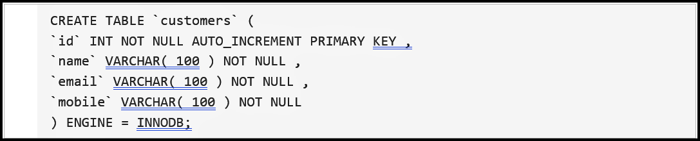
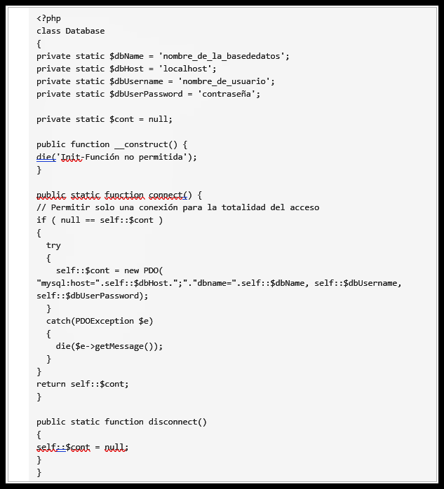
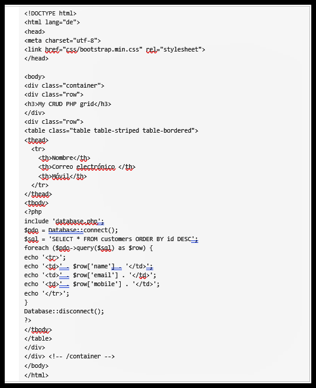
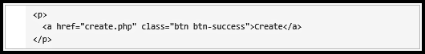
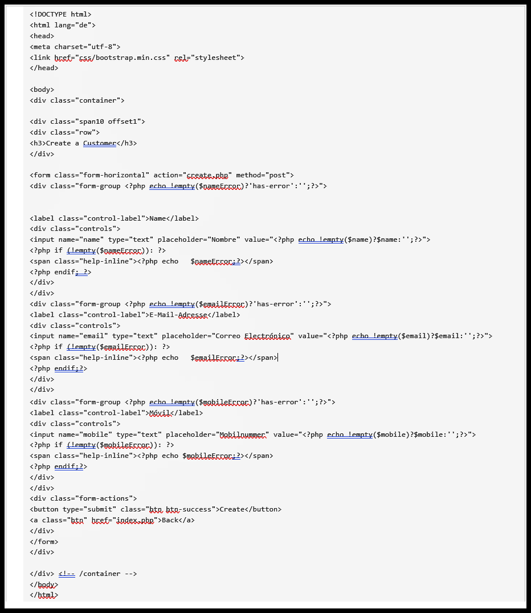
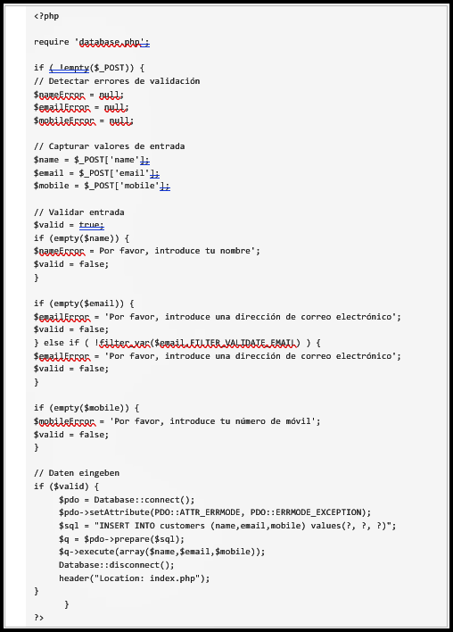

CÓMO DESARROLLAR UN CRUD PHP GRID PARA TU BASE DE DATOS
En la siguiente parte de este artículo te mostraremos cómo crear una interfaz de arranque para MySQL, el sistema de base de datos más utilizado, que permita el acceso a través operaciones CRUD. Adicionalmente podrás crear la operación “create”. Para manipular la base de datos se utiliza, en este caso, el lenguaje de script del lado del servidor PHP y la extensión PHP Data Objects (PDO).
1) El primer paso consiste en crear una tabla de base de datos simple que pueda ser manipulada con operaciones CRUD. Para ello, importa la siguiente tabla de ejemplo en tu base de datos MySQL:

La tabla se utiliza para recopilar información del usuario como nombre, correo electrónico y número de teléfono. A cada entrada se le asigna automáticamente una clave principal (AUTO_INCREMENT PRIMARY KEY), es decir un identificador único.
2) A continuación, es necesario regular las conexiones de apertura y de cierre de la base de datos. Crea un archivo PHP con el nombre database.php y añade la siguiente secuencia de comandos con la clase “Database” para gestionar las conexiones de la base de datos.

Para que puedas utilizar la clase definida en el documento y lograr el acceso a la base de datos con PDO, necesitas los valores exactos de los elementos $dbName (nombre de la base de datos utilizada), $dbHost (nombre del host donde se ejecutará la base de datos, por lo general localhostcomo en el ejemplo), $dbUsername (nombre del usuario que accede) y $dbUserPassword (contraseña del usuario que accede).
En esta secuencia de comandos se le asignan tres funciones a la clase “base de datos”: __construct(), el constructor de la clase que le recuerda a los usuarios que la inicialización (es decir, la asignación del valor inicial o de inicio) no está permitida. connect() hace referencia a la función principal de la clase que controla el establecimiento de la conexión y, por último, disconnect() que se encarga de finalizar la conexión.
3)Debido a que las operaciones CRUD solo pueden utilizarse con la correspondiente superficie de contacto, es necesario crear el grid base utilizando Twitter Bootstrap. La versión actual de este framework puede descargarse en su página web oficial. Descomprime Bootstrap en el mismo directorio donde se encuentra database.php y crea un nuevo archivo con el nombre index.php. Ahora puedes crear la interfaz:

En la sección , se encuentran los archivos CSS y JavaScript de Bootstrap; en la sección se encuentra el anteriormente creado database.php, incluyendo los intentos para establecer una conexión POD (Database::connect()) y sus datos relacionados (SELECT). Adicionalmente, el archivo contiene la tabla HTML
con las opciones nombre, correo electrónico y móvil (que también son almacenados en la base de datos).
4) Ahora, para formar la estructura esencial, es necesario concentrarse en la realización de las diferentes operaciones CRUD. Por ejemplo, para poner en marcha la operación create se necesita otra página HTML con campos de formulario para introducir los datos de usuario vinculados en index.php y a los que se puede acceder a través de un botón en la interfaz Bootstrap. Para mayor comodidad se recomienda comenzar con la creación de este botón, abriendo index.php y añadiendo el siguiente fragmento de código al elemento
de la tabla:

En el fragmento de código puedes ver que los datos se están vinculando al archivo create.php aunque este todavía no exista. Al realizar una prueba del grid de Bootstrap, esta muestra que hay un botón pero, al hacer clic sobre él, este dirige a una página de error. Para finalizar y hacer válida la operación create debes crear el archivo create.php y añadir el siguiente código:

El código genera el formulario HTML que permite personalizar la información en los campos nombre, correo electrónico y móvil. Para cada casilla se crea una variable PHP que, en combinación con el fragmento de código que presentamos a continuación (se debe añadir antes del código HTML en el archivo create.php), genera mensajes de error cuando no se realiza ninguna entrada en el campo correspondiente:

De esta forma habrás creado una página create.php a la que se accede haciendo clic en el botón crear y que permite al usuario introducir su información. El script se asegura de comprobar que se hayan introducido todos los datos y, en caso contrario, de mostrar los respectivos errores de validación; así, no solo se mostrarán mensajes para avisar al usuario de que los datos serán enviados a la base de datos, sino también mensajes de error cuando la entrada sea incorrecta.